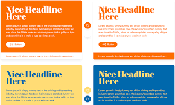

유용한 사이트 소개

투컬러컴비네이션 ( 2color )
어울리는 두 가지 컬러를 조합
ppt쓸때 조화를 제안해줌
거를 타선이 없음
환상적
대학생에게 우여곡절 끝에 내용이 정말 알찬 PPT자료를 준비했습니다. 하지만 A는 여전히 고민이 많아 보입니다. 바로 PPT의 디자인 때문입니다. 아무리 질 좋은 자료를 준비해도 시각자료를 동반한 발표에서는 디자인도 정말 중요한데요. 이러한 고민을 단번에 해결해 줄 사이트 하나 추천드립니다.